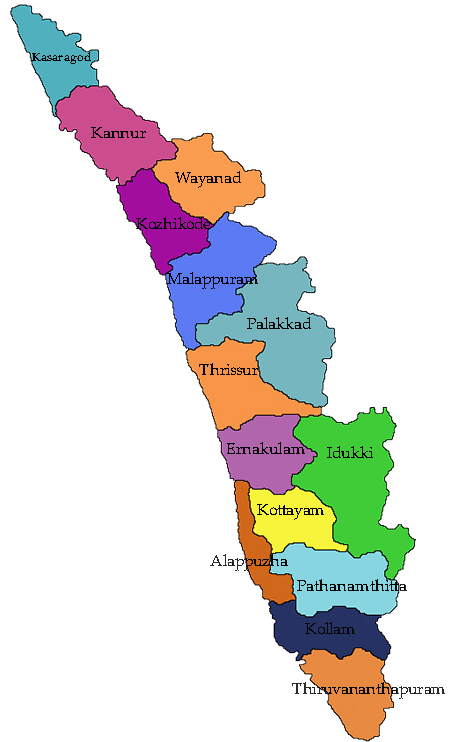

There is the whole of Kerala in one side, and then there is this
heavenly tourist destination called Alappuzha or Alleppey! Esteemed
as the ‘Backwater Capital of India’ or the ‘Venice of the East’,
Alleppey is known for its silent backwaters and bountiful beauty!
Beauty of Wayanad
Cradled in the lap of the Western Ghats, Wayanad truly deserves a
top rank in the list of places to visit in Kerala. Situated at an
astounding height of 700-2,100m, this stunning hill station is all
about fantasy, untouched nature, unforgettable moments, and
merriment!
Queen of the Arabian Sea - Kochi
Kochi or Cochin is a unique placein God’s Own Country that is
perfectly blended with cultural values and modern ideas! Fondly
called the ‘Queen of the Arabian Sea’, this imposing port-city has
always been an attraction point since the beginning of history.
Picturesque Munnar
Yet another gorgeous hill station in the lap of the fascinating
Western Ghats, Munnar needs no introduction. Rising 1,600m above the
sea level, a vacation in the beguiling locales of this hilly retreat
is all about the lofty clouds, picturesque mountains, rolling hills,
and a soothing ambience.
About Kerala

Kerala is one of the small states of India in terms of area. it
consists of only 1.3 per cent of the total area of India. The state is
located in the southwest corner of India. Karnataka and Tamil Nadu
bound it on north, east and south and on east by the Arabian Sea.